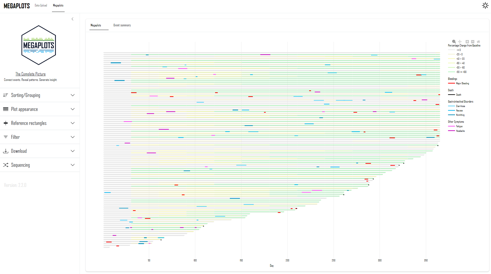

Megaplots provides an interactive visual exploration of event timelines across subjects, enabling users to uncover meaningful patterns that are often difficult to detect in traditional tabular outputs. By aligning events relative to key study milestones, the app shows how different occurrences develop over time and how they relate to one another within individual subjects. Its dynamic visualization makes it easy to identify temporal clusters, recurring sequences, and potential dependencies between multiple event types. Users can seamlessly compare patterns across treatment arms, demographic segments, or other study-defined subgroups to understand how experiences vary between populations. The app also highlights similarities and differences across subjects, helping to uncover groups that share common event trajectories or behavioral profiles. Flexible filtering and subgrouping capabilities support targeted investigations while maintaining a comprehensive study-level perspective. Megaplots transforms complex event data into actionable insights that support deeper understanding and more informed decision-making.